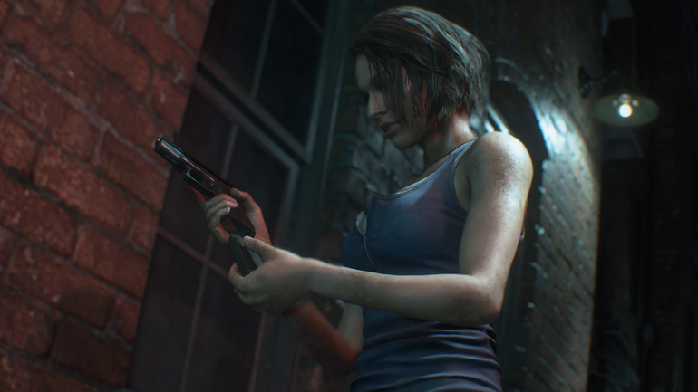
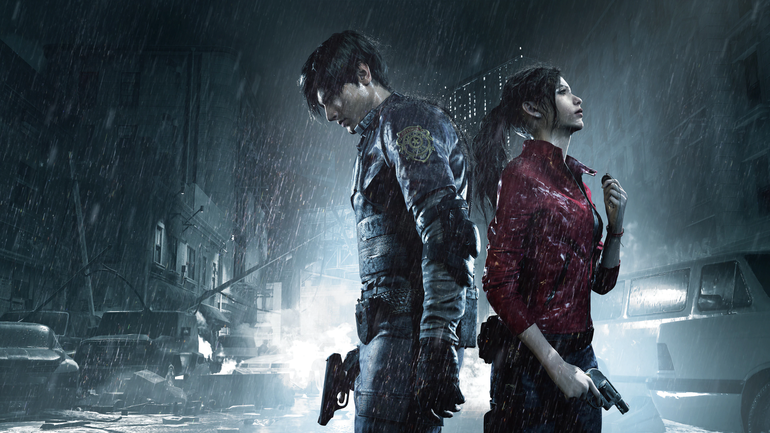
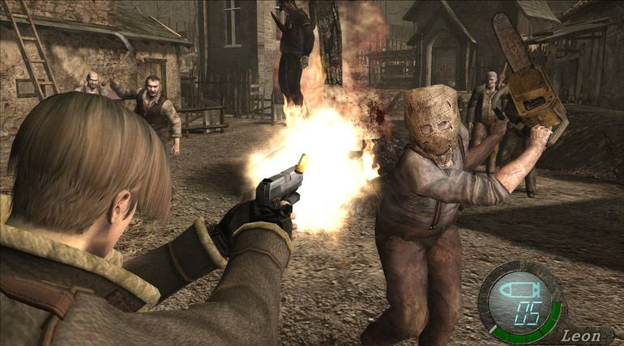
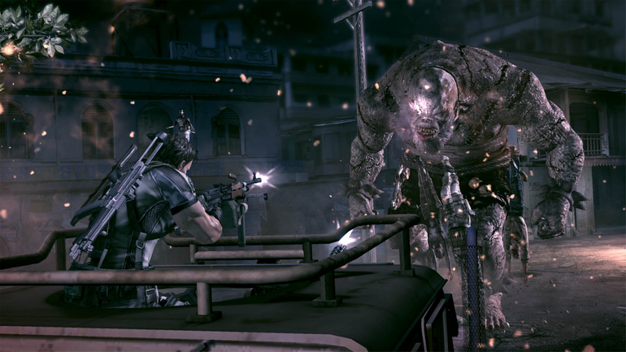
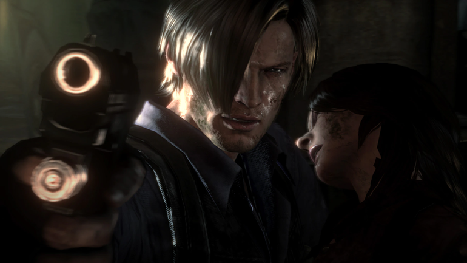
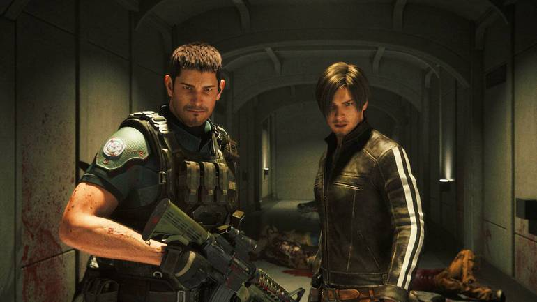

Resident Evil: Cronologia completa dos jogos, filmes e série
Resident Evil é uma das poucas séries da indústria que sobreviveram ao teste do tempo e parecem estar até mais fortes do que um dia foram. Contudo, a cronologia dos jogos da série de terror da Capcom está longe de ser algo simples de entender. Abaixo, o The Enemy traz a linha do tempo completa de Resident Evil, para que você nunca mais tenha dúvida. Começamos com o jogo que deu origem à série e, depois, trazemos todos os que fizeram a história continuar avançando. Caso se esqueça um dia, basta voltar aqui e dar uma olhada.
Resident Evil 0

Lançado em 2002 para Nintendo GameCube e, posteriormente, para outras plataformas, Resident Evil 0 dá início à série Resident Evil, cronologicamente. O jogo se passa em julho de 1998 e mostra como Rebecca Chambers chegou até a mansão do primeiro game, sendo ela a primeira personagem a ver a Mansão Spencer por dentro.
Resident Evil

O primeiro jogo de Resident Evil a ser lançado chegou ao mercado em 1996 e se passava no futuro não tão distante de 1998. Obviamente, Rebecca (ou qualquer outro ser humano) não sobreviveria muito tempo em uma mansão infestada de zumbis. Logo, o jogo se passa também em julho de 1998, pouco após a chegada de Rebecca à Mansão Spencer. Chris, Jill, Barry e Rebecca foram salvos no final por Brad Vickers.
Resident Evil: Outbreak
Como você já deve imaginar, as duas versões de Resident Evil Outbreak se passam pouco antes do início de Resident Evil 3: Nemesis (ou simultaneamente, no mínimo). Afinal, estamos falando de cidadãos de Raccoon City lutando contra hordas de zumbis logo que o vírus se espalhou pela cidade. O primeiro Outbrak foi lançado em 2003 e o segundo chegou ao mercado em 2004.
Resident Evil 3: Nemesis(começo)
Sabemos que Jill Valentine não encontrou Leon Kennedy e Claire Redfield enquanto esteve em Raccoon City. Isso porque a aventura dela no terceiro jogo da série, lançado em 1999, se passa tanto antes quanto depois de Resident Evil 2. No início, Leon e Claire não tinham chegado à cidade ainda.
Resident Evil 2
Quando Leon e Claire chegaram a Raccoon City, a cidade já havia sido tomada pelos zumbis, portanto, não havia tanto caos nas ruas — apenas criaturas deformadas terminando de acabar com a população local. Juntos, eles e Sherry Birkin conseguiram escapar desse pesadelo antes mesmo que Jill pudesse fazer o mesmo. O jogo foi lançado em 1998.
Resident Evil 3: Nemesis (final)
As últimas fases de Jill Valentine em Resident Evil 3: Nemesis se passam depois de Resident Evil 2. Afinal, como sabemos, ela testemunhou a destruição de Raccoon City por uma bomba atômica após derrotar o insistente (e fenomenal) Nemesis.
Resident Evil: Survivor
Depois da explosão de Raccoon City, mas antes da primeira aventura solo de Leon, temos Resident Evil Survivor, jogo lançado em 2000 e situado na Ilha Sheena. Esse game de tiro em primeira pessoa acabou não agradando os fãs e foi extremamente criticado por, bom... Todos os aspectos, basicamente.
Resident Evil — Code: Veronica
Também lançado em 2000, Resident Evil — Code: Veronica foi o primeiro jogo protagonizado por Claire Redfield. O game se passa após os acontecimentos de Survivor, ainda em 1998, e mostra a heroína do segundo jogo procurando mais informações sobre a Umbrella. A história ficou marcada pelo retorno de Chris Redfield, irmão de Claire, e Albert Wesker.
Resident Evil Survivor 2 – Code: Veronica
Como você já deve imaginar, os eventos de Code: Veronica deixaram Claire traumatizada. Inclusive, isso chegou ao ponto de um pesadelo inteiro dela ter sido adaptado em um jogo lançado em 2001 (no Japão). Esse jogo era, evidentemente, Resident Evil Survivor 2 – Code: Veronica.
Resident Evil: Dead Aim
Finalmente, podemos deixar 1998 no passado. Resident Evil: Dead Aim foi lançado em 2003 e é situado no passado então recente de 2002. Sem muita relevância para o universo de Resident Evil, de forma geral, o jogo se passa em um navio cheio de zumbis. O papel do jogador, naturalmente, é sobreviver. Aliás, se o local fez você se lembrar de Resident Evil Gaiden, saiba que o jogo de Game Boy não é canônico e, portanto, não aparecerá na lista. O mesmo vale para Operation Raccoon City e The Mercenaries 3D.
Resident Evil 4
O jogo solo de Leon, que marcou uma revolução para games de tiro em terceira pessoa, se passa em 2004, embora tenha sido lançado em 2005. Nele, vemos que Leon passou a trabalhar para o governo dos Estados Unidos e está indo atrás da filha do presidente, que foi sequestrada.
Resident Evil: Revelations
Situado um ano depois da aventura de Leon, Resident Evil: Revelations foi lançado em 2012. Nesta história, Jill Valentine e Chris Redfield, os heróis do primeiro jogo da série, voltam a ser os personagens principais. Foi o último jogo inédito a ser protagonizado por Jill, infelizmente.
Resident Evil: Degeneração
Em 2008, o primeiro filme animado em CG de Resident Evil foi lançado. Degeneração trouxe de volta uma das duplas mais amadas da franquia, Leon e Claire, em uma rápida história situada em um aeroporto que acaba sendo isolado porque há um surto de Vírus-T. O longa animado é situado em novembro de 2005.
Resident Evil: No Escuro Absoluto
A recente série animada da Netflix, lançada em 2021, se passa em 2006, um ano após os acontecimentos de Resident Evil: Degeneração. Novamente, os personagens principais são Leon e Claire.
Resident Evil 5
Todos os conteúdos de Resident Evil 5, incluindo os DLCs Lost In Nightmares e Desperate Escape, se passam entre 2006 e 2009 — após os acontecimentos de No Escuro Absoluto. Aqui, temos a eliminação definitiva de Albert Wesker. O jogo foi lançado em 2009.
Resident Evil: Revelations 2
O segundo jogo da subsérie Revelations foi lançado em 2015, três anos após o antecessor. Situado em 2011, esse foi o último jogo a trazer Claire como protagonista. Aliás, ela foi acompanhada por Barry Burton, o antigo parceiro de Jill Valentine.
Resident Evil: Condenação

Esse filme animado de Resident Evil estreou em 2012. Adivinha? Sim! Leon é o protagonista, novamente. A história é situada em 2011, um ano antes de Resident Evil 6, que seria o último jogo inédito a trazer Leon como personagem principal.
Resident Evil 6
Entre os anos de 2012 e 2013, o mundo de Resident Evil passou por um período bastante delicado. Não apenas porque os jogos foram duramente criticados, mas também porque a história era absolutamente megalomaníaca — o futuro do mundo estava em jogo. O game chegou ao mercado em 2012.
Umbrella Corps
Depois de Resident Evil 6, o próximo game na cronologia é Umbrella Corps, situado também em 2012 e 2013. Achou que só porque o jogo é multiplayer ele não se encaixaria entre os jogos canônicos? Pois é, achou errado. O game foi lançado em 2016.
Resident Evil: A Vingança
O terceiro filme animado em CG de Resident Evil a aparecer nesta lista traz algumas das cenas de ação mais bizarras da história envolvendo Chris e Leon. Rebecca Chambers também voltou, após muito tempo, a ter relevância para a franquia. O longa foi lançado em 2017 e se passa em 2014.
Resident Evil 7

Com exceção das fitas que o jogador encontra ao longo do caminho, a jornada de Ethan Winters se passa em 2017, mesmo ano em que o jogo foi lançado. Pelo menos ele teve alguns anos de paz antes do jogo mais recente da série.
Resident Evil Village
Lançado em 2021, Resident Evil Village é situado em 2021. Desta vez, Ethan precisa salvar a filha, que foi sequestrada por uma vilã que é idolatrada pela população de um vilarejo. Até o momento, é o jogo que fecha a cronologia da série.